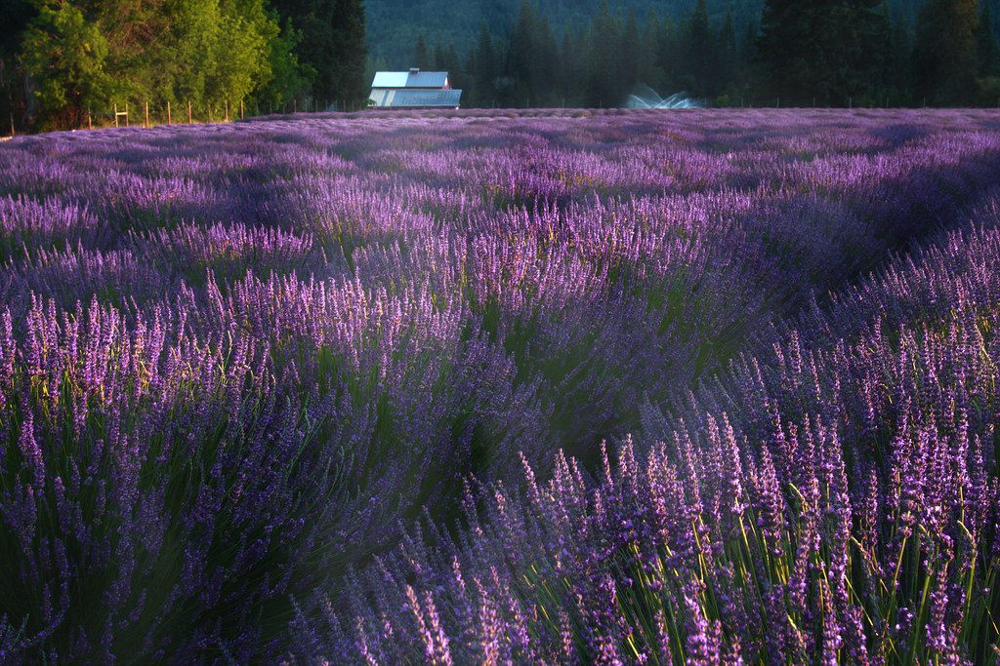

Reel Nº 4 · Night shift
The last tram leaves at midnight.
Nothing here has a look of its own: photographs, footage and a drawn plate take their colour from one grade, and the type above stays the colour the director gave it.

Reel Nº 4 · Night shift
Nothing here has a look of its own: photographs, footage and a drawn plate take their colour from one grade, and the type above stays the colour the director gave it.
